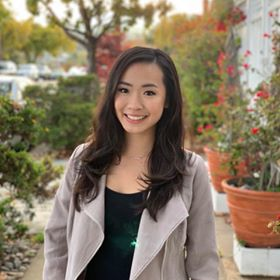

About Me
Hi there! My name is Liena Hua and I currently live in San Francisco California. I would like to share my background as well as my career objective with you, so you can get to know me a little bit more. I work at a cyber-security company in the Marketing Operations department. My daily job responsibilities involve automation, lead generations, and landing paging and email template creation. I’m a curious person, which I always open to learn new thing in my personal life or at work. I’m also a handworker. If something I determine to do or learn, I will work hard to achieve the goal that I set for myself. A quote that constantly keeps me moving “All roads that lead to success have to pass through hard work boulevard at some point” by Eric Thomas.
Outside of work, I spend lots of time with my two dogs (The giant Alaska Malamut and Maltipoo). I always bring them to hiking and explore new tails, drive to Tahoe to experience a snowy day in the winter, and take them to the beach for a sunny beach day in the summer. I’m also a very crafty person and enjoy doing DIY projects. When I was in college, I started to make my own candle, blanket and pillows. Recently, I started to make my own chapsticks too. On another hand, I love travel the world and make travel videos. In the past 3 years, I have been to Columbia, Iceland, Korea, Singapore, and Indoneisa. Traveling to different countries and learning different cultures definitely allows me to see the world in a different prospective.